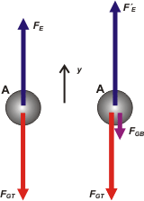

NO ME SALEN
PROBLEMAS RESUELTOS DE FÍSICA DEL CBC
(Gravitación)
|
|

|
NMS d4.01- En un laboratorio se tiene suspendida en
equilibrio una esfera de 10 kg y 12 cm de diámetro,
por medio de un dispositivo a resorte muy
sensible. Se lleva debajo de la misma otra esfera
de plomo, de 2000 kg y 70 cm de diámetro, de
modo tal que el equilibrio se establece con ambas
esferas a 1 cm de distancia. Hallar la intensidad
de la fuerza gravitatoria entre ambas. Si la
constante elástica de la suspensión fuera
50 N/m, ¿qué desplazamiento sufriría la esfera de
10 kg?
NOTA: Adoptar constante de Gravitación Universal:
G = 6,67.10-11 Nm²/kg² |
 |
|
Si te parece le vamos a dedicar un minuto de discusión para tratar de entender el problema. Sacá la bola grande (con tu mente) que para eso está puesta sobre un carrito. ¿Qué queda?: una bola pequeña colgando de un resorte. El resorte está algo estirado, lógicamente, ya que tiene colgando a la bola pequeña (que en adelante llamaré Bola A) que es atraída por la Tierra. A esa fuerza con que la atrae la tierra, que habitualmente llamamos peso, en este problema la llamaremos fuerza gravitatoria terrestre, FGT .
Bien, ahora traé el carrito y poné la bola grande, B, muy cerca y justo abajo de la otra. ¿Qué te parece que se observa? ¡Correcto! Se observa que la bola A desciende un poquitito más, o si querés, que el resorte se estira un poquitito más, no mucho más... apenas un pelito. ¿Pero por qué baja? Porque ahora, a la fuerza con que la Tierra tiraba hacia abajo de la bolita A, se le suma la fuerza con que tira la bola B, de 2.000 kilos, que también interactúa gravitatoriamente con la A. A esa fuerza con que jala la bola B la llamaré fuerza gravitatoria boluda, FGB .
Vamos al DCL, te voy a hacer dos, para reforzar la idea que acabo de explicarte y porque además, los usaremos a ambos. |
|
|

|
Los dos nos interesan porque el enunciado nos pregunta cuánto se desplaza la esfera, de modo que vamos a tener que comparar las dos fuerzas elásticas, que llamé FE y FE' ; que se corresponden respectivamente con el estiramiento inicial Δx, y el posterior Δx' después de colocar la bola grande.
Vayamos a las ecuaciones y vemos qué pasa. Empecemos con la situación inicial. No olvides que en ambas situaciones la bola A se halla en equilibrio ( a = 0 ). |
|
|
|
ΣFy = 0 → FE — FGT = 0
|
[1] |
| además sabemos que |
|
FGT = mA . g
|
[2] |
| y que |
|
FE = k Δx
|
[3] |
|
|
|
| Ahora describamos la nueva situación que se presenta cuando colocamos la bola de plomo debajo de la chiquita. Acá va a aparecer la fuerza gravitatoria boluda, y nos va a interesar poder calcularla, no es difícil si recordamos la Ley de gravitación universal: FGB = G . mA . mB / d² , donde d es la distancia que separa los centros de masa de los cuerpos que están interactuando, en este caso el A y el B. ¿Tenés claro cuánto vale esa distancia? Te ayudo. |
|
|
 |
Ahí tenés, la distancia que separa los centros es
RA + RB + 1 cm = 42 cm o sea 0,42 m.
Y
d = 0,42 m
d² = 0,176 m²
Por lo tanto:
FGB = 6,67 x 10-11 . 10 . 2.000 N/ 0,176
FGB = 7,56 x 10-6 N
OK, ahora volvamos a plantear las ecuaciones pero para la situación con bola B incluída. |
|
|
|
| ΣFy = 0 → FE' — FGT — FGB = 0 |
[4] |
| además sabemos que |
|
FE' = k Δx'
|
[5] |
|
|
|
Creo que tenemos todo, a ver... la [2] y la [3] las meto en la [1]
k Δx = mA . g
Δx = mA . g / k
Δx = 2 m este es el primer estiramiento
la [5] y la [2] las meto en la [4]
k Δx' — mA . g — FGB = 0
de donde
Δx' = (mA . g + FGB )/ k
Δx' = 2,00000015 m este es el estiramiento con bola abajo
la diferencia de estiramiento, que voy a llamar e, es
e = Δx' — Δx
|
|
|
| |
e = 0,00000015 m = 1,5 x 10-7 m = 0,15 μm |
un pelito |
|
|
|
| DISCUSION: Queda claro que las fuerzas gravitatorias son muy pequeñas. Si la gravitatoria con la Tierra, o sea el peso, es notoria, se debe a que la Tierra es un cuerpo muy masivo. Sin embargo puede construirse un aparato muy pero muy sensible y parecido al que te describen en este problema y con ello medir una fuerza gravitatoria entre dos cuerpos manipulables y medibles en el laboratorio. Justamente así fue como se consiguió medir G. Si te interesa el tema te invito a leer un artículito muy breve de las enseñanzas del Maestro Ciruela: LA
CONSTANTE DE GRAVITACION UNIVERSAL,
Nadie se preocupó por medirla. |
|
 |
| DESAFIO: Sólo con los datos que aporta este problema y los que se usaron durante la resolución, calcular la masa de la Tierra sabiendo que su radio vale 6.370 kilómetros. |
|
| Algunos derechos reservados, exceptuado el derecho a réplica.
Se permite su reproducción citando la fuente. Última actualización set-06. Buenos Aires, Argentina |
|
|
|